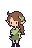
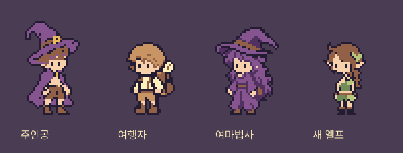
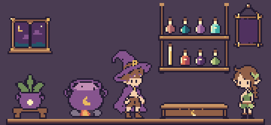

이전 의상 · 잎 망토

한쪽 어깨가 드러나는 짧은 잎 상의, 가죽 허리띠와 손목 보호대, 반바지 위의 비대칭 잎 장식으로 옷을 바꿨습니다. 얼굴과 머리는 이전 시안과 같은 픽셀입니다.


같은 32×48 원본입니다. 모자 없는 상단11행은 비워두고, 머리22×16 기준 · 몸통13행 · 다리7행을 유지했습니다. 두 눈은 같은 높이1×2, 머리카락과 피부1픽셀 여백으로 분리했습니다.


9종 재배 중■ 제작 중재고 8 / 12전신 외형을 확인하는 정지 목업입니다. 새 디자인의 걷기·받기 키프레임과 행동 애니메이션은 다음 단계입니다.